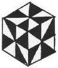

|
Finite Geometry Notes
|
Move your mouse cursor over the cube and its rotation will roughly follow the movement of the mouse. Click once to bring any of the faces forward. Once a face is locked forward it can be double clicked to link the parent web page. A single click will cause the face to recede and rotation will recommence.

The cube is called the "whirl" cube since eight copies of the cube can be used to make the pattern above.
Cube design © 1984 by Steven H. Cullinane